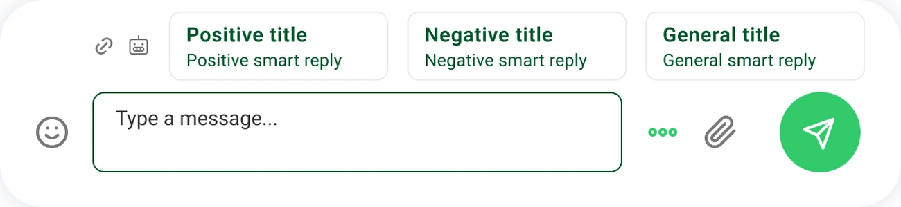
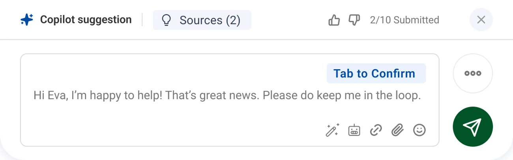

- Three suggestions to read, compare and pick from
- Generic tone that didn't match the host
- Answers that weren't always accurate
- No way to check where the information came from
- One draft, prefilled in the message field to edit or send as is
- Tone selection to match each host's style
- Accuracy improved through engineering evals
- A source view to validate every answer
- Tab to confirm, with thumbs up or down feedback on every draft